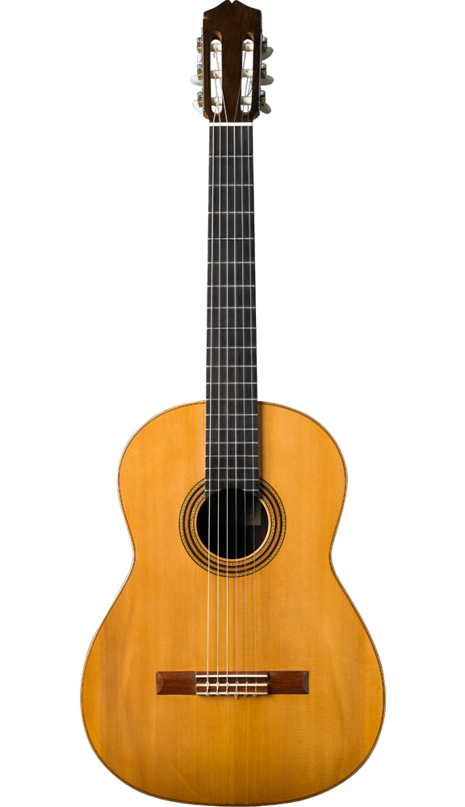
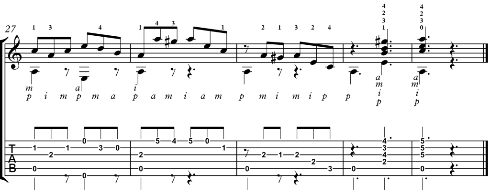
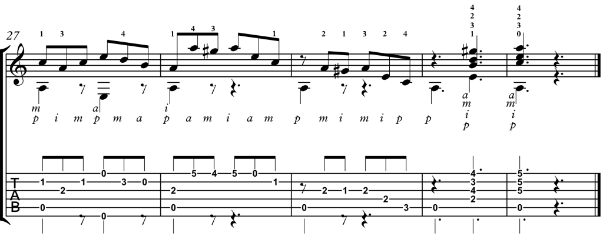
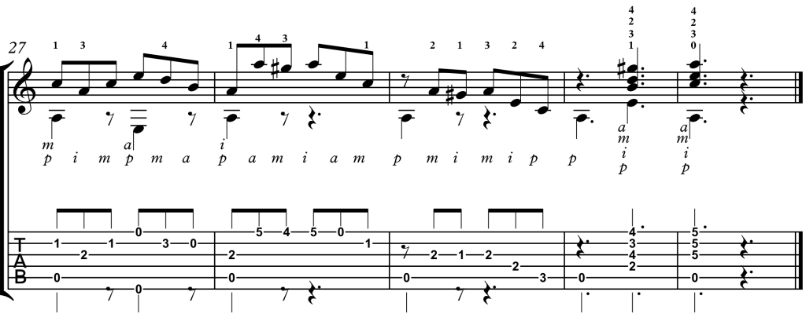

The guitar was invented in early 16th century in Spain and was much narrower and deeper than the guitar we
know today. In the 16th century, the original guitar had four string courses, three double and one single.
The original guitar was also tuned C-F-A-D' for the four string courses. This original guitar also had a top
course single that ran from a violin-like pegbox to a glued-to-the-soundboard tension bridge, or belly,
which greatly improved the guitar's performance. Many people contributed to the development of this original
guitar, including Alonso Mudarra, Miguel de Fuenllana, Juan Vasquez, Melchiore de Barberiis, Iutenist
Alberto da Ripa, Adrian Le Roy, Guillaume de Morlaye, and Pierre Phalese.
The Development of the Guitar
With the invention of the guitar came many new developments. Following the invention of the guitar, a fifth
course of strings was added later in the 16th century. In the 16th century, the violin-type pegbox was
replaced by a flat reflexed head with rear tuning pegs. Later, in the 18th century a sixth course was even
added to the guitar, and metal frets replaced tied-on gut frets for the guitar. The nineteenth century also
saw the replacement of tuning pegs with metal screws and the placement of the fingerboard above the level of
the belly. We even saw changes in body shape, with the body becoming wider and shallower to help increase
sonority. Nowadays, we distinguish between two types of guitars: Dreadnoughts and Concert guitars.
Dreadnought guitars have a larger and broader shape than concert guitars, which are smaller and narrower.
Dreadnought guitars are typically used in bands, concerts, and other loud events. Concert guitars are used
for practicing on your own, or for any other purpose that requires a quiet sound.
TYPES OF GUITARS
From the 16th century to the present, many different types of guitars have been invented. Classical guitars,
Acoustic guitars, Flamenco guitars, Electric guitars, Electro-acoustic guitars, Bass guitars, Hallow-body
guitars, Semi-hallow guitars, Lab Steel guitars, and Pedal Steel guitars are among the various guitar types.
We will be going in-depth by covering more about Classical, Electric, and Bass guitars.
Classical Guitars
In this section, we'll go over Classical Guitars in greater detail and learn how to play them. Let's start
with a definition of Classical Guitars. Classic Guitars are guitars which consist of 6 strings, sound hole,
several frets, and many other components which are also included in other guitars. Unlike other guitars
classic guitars strings are made of nylon, the body is more hollow, and the neck is slightly shorter while
the fretboard is wider. The image below depicts what a classic guitar would look like and the parts of it.

Electric Guitars
In this section we will be learning more about electrical guitars and how to play them in this part. An
electrical guitar's vibrating strings produce sound, which can then be converted into electrical
impulses that are delivered to an amplifier.
The majority of these noises need to be converted, which requires electrical induction.
The fact that you typically have three control settings to assist you create the sound you desire is a
benefit of playing the electric guitar.
There is a pickup switch, a volume knob, and a tone knob to control frequency. It shares many
characteristics with an acoustic guitar, for instance, but electric guitars' bodies aren't as hollow as
those of acoustics.
The illustration that follows shows how an electric guitar looks the parts of it.
Comparing Electric and Classical Guitars
Both classical and electric guitars have many similarities and, at the same time, many differences, as can be
seen when comparing them.
One of the distinctions is that classical guitars have a hollow body, whereas electrical guitars do not.
The kinds of strings that are used in each guitar are another distinction. Electric guitars typically have
steel strings, while classical guitars typically have nylon strings.
The type of notes, however, is one of the main similarities between classical and electric guitars. When
choosing which to play, the fact that both classical and electrical use the same notes is very helpful.
However, you also need to consider the kind of strings.
Below are provided notes for both Classical and Electrical Guitars to help you with your learning. The images
below depict all
of the notes as well as the strings used to play each note. Also, provided are tips and tricks to help you
as well.

Strings for Classical and ELectric Guitars
We will be going over the tuning for each of the 6 strings in a Classical and Electrical Guitar in this
section.
For standard guitar tuning in classical and electrical guitars, we usually start from the lowest string
which is the 6th string, to the highest string which is the first string.
Now, let's talk about each string and the names for them. The first string which is the thinnest, high
pitched string is known as High E.
The second string is known as B. The third string is known as G. The
fourth string is known as D.
The fifth string is known as A. The sixth string, which is the last string is also known as
Low E. So, you would start from low e and go to high e, in an order like E-A-D-G-B-E.
This can also be remembered as Every Amateur Does
Get Better Eventually. Below is a picture for your
reference
for the tuning and strings as well.
Tips to Help You Play the Guitar
The best way to undestand the guitar notes shown above is by understanding each string. Each line on the
notes represents a string and each number for the corresponding note tells you which note to play. Below is
a picture that can help you understand and figure out what note is used for each string. That picture can be
used in order to understand the guitar notes shown above.
Now, let's talk about tips that can be used while playing the guitar. First, make sure that you are holding
the guitar in a playing position that you are comfortable with, and can even use a tool to help you hold
this instrument if needed. Using your fingernails is advised when playing the classical guitar as it can
lead to a much better sound, but also make sure that no extra sounds are being created such as a buzzing
sound. Plucking the strings with your fingers can also be really great and used a lot while working with
Classical Guitars.
Practice for Classical and Electrical Guitars
For our practice example, we will be learning to play Allegro. To help improve your skills, you can practice
by trying to play Allegro using the music note sheet shown below.
Here is an audio file for how Allegro would sound on a Classical or Electrical Guitar.
Bass Guitars
In this section, we will be learning more about bass guitars and how to play them as well.
The bass guitar is constructed in a manner that is similar to that of the electric guitar; the only
distinction is that the bass guitar produces a lower frequency.
Similar to an electric guitar, which transmits its signal through an amplifier to produce a wide range of
sounds when its metal brass strings vibrate over a magnetic pickup.
Majority of Bass guitars have 4 strings, but 5-8 string models are also available. The illustration that
follows shows how an bass guitar looks the parts of it.
Below are provided notes for Bass Guitars to help you with your learning. The images below depict all
of the notes as well as the strings used to play each note. Also, provided are tips and tricks to help you
as well.
Strings for a Bass Guitar
We will be going over the tuning for each string in a 4 string Bass Guitar in this section.
The first string which is also the highest string is tuned to G2 and is known as the G
string.
The second string is turned to D2 and is known as the D string.
The third string is tuned to A1 and is known as the A string.
The fourth string which is also known as the lowest string is tuned to E1 and is known as the E
string.
Below is a picture for your reference for both the tuning and the strings for a bass guitar.
Tips to Help You Play the Bass Guitar
The best way to undestand the guitar notes shown above is by understanding each string. Each line on the
notes represents a string and each number for the corresponding note tells you which note to play. Below is
a picture that can help you understand and figure out what note is used for each string. That picture can be
used in order to understand the guitar notes shown above. You can also read the above paragraph and examine
the picture to understand
more about the tuning of strings as well.
Let's now discuss some helpful hints for playing the bass guitar. One of the main tips would be to play with
a use a guitar pick.
The main reason for this is that using a pick can help you achieve a much better sound and tone rather than
your hands. Another tip would be to not be afraid of effects.
The bass guitar is provided with many additional features and feel free to test them out and see which you
prefer to use while playing.
Practice for Bass Guitars
For our practice example, we will be learning to play Allegro. To help improve your skills, you can
practice
by trying to play Allegro using the music note sheet shown below.
Here is an audio file for how Allegro would sound on a Bass Guitar.
Fun Fact!
Stringed instruments are the most commonly used instruments among the other families of instruments which
include woodwinds, brass, and percussion!!!

 
